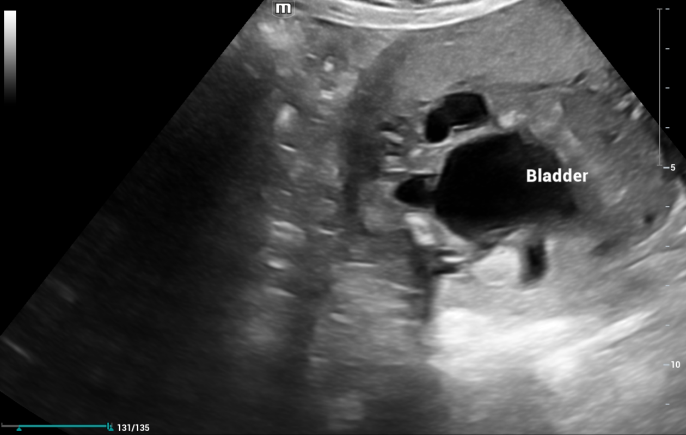

Página 9 · Sofrimento fetal crônico
A dinâmica do líquido e as causas de oligodrâmnio
Nem toda oligodrâmnio é sofrimento
Nem toda oligodrâmnio é sofrimento. O oligodrâmnio pode, sim, decorrer de insuficiência placentária — mas não só: nem toda oligodrâmnio é sofrimento fetal. Reduzir a bolsa seca a “problema de placenta” é perder metade do diferencial.
Quem produz e quem reduz o líquido
Quem produz e quem reduz o líquido. A partir de 20 semanas, o principal formador do líquido amniótico é o rim fetal — a diurese fetal. Do outro lado, o trato gastrointestinal (a deglutição) é o principal redutor, mantendo o equilíbrio: um produz, o outro reduz. Pense numa torneira que enche e um ralo que esvazia; o nível é o balanço dos dois.
Interativo: desabilite um prato e veja oligo ou poli.
O rim fetal produz (diurese, > 20 sem); o trato gastrointestinal reduz (deglutição). Falha na produção (agenesia, válvula, IECA, indometacina) → oligodrâmnio; falha na redução (obstrução alta do TGI) → polidrâmnio.A bolsa rota, das maiores causas
A bolsa rota, das maiores causas. Antes de acusar a placenta, lembre da mais prosaica: a ruptura prematura de membranas ovulares (bolsa rota) é uma das maiores causas de oligodrâmnio. O líquido simplesmente escapa.
Malformação urinária seca a bolsa
Malformação urinária seca a bolsa. Se o problema é na torneira, o feto urina menos: agenesia renal ou obstrução (válvula de uretra posterior) reduzem a diurese → oligodrâmnio.

A grande estrutura anecoica é a bexiga distendida; junto ao colo, a extensão anecoica menor forma o “keyhole” — uretra posterior dilatada acima de uma obstrução (válvula de uretra posterior). Obstrução urinária baixa seca a bolsa: nem toda oligodrâmnio é placenta.
Case courtesy of Mohamed Ibrahim Ali, Radiopaedia.org — Posterior urethral valve (antenatal ultrasound) · fonte / licença: CC BY-NC-SA 3.0
O paralelo do excesso (polidrâmnio)
O paralelo do excesso (polidrâmnio). O espelho ajuda a fixar: se o ralo entope, o líquido sobra. Obstrução alta do trato gastrointestinal (estenose/agenesia de esôfago) ou doença central que interfere na deglutição impedem a redução do líquido → polidrâmnio. Torneira aberta demais = polidrâmnio por falha de reabsorção; torneira fechada = oligodrâmnio por falha de produção.
As medicações: IECA e indometacina
As medicações: IECA e indometacina. Duas drogas caem como pegadinha: os IECA (captopril, enalapril) reduzem o fluxo renal fetal → menos diurese → oligodrâmnio; a indometacina reduz a produção de líquido pela placenta. E há um desdobramento elegante: justamente porque reduz o líquido, a indometacina é usada como ferramenta para tratar polidrâmnio quando o quadro não é grave.
Quiz — fixação
Depois de 20 semanas, o principal formador do líquido amniótico e o principal redutor são, respectivamente:
- Gabarito B. Rim produz, TGI reduz — o equilíbrio da bolsa.
- A a placenta não é o formador principal após 20 semanas (é o rim).
- C inverte produtor e redutor.
- D o pulmão não é o formador principal; o par correto é rim/deglutição.
Gestante em uso de captopril desenvolve oligodrâmnio. Qual o mecanismo, e qual outra droga também causa oligodrâmnio (por via distinta)?
- Gabarito A. IECA age no rim fetal; indometacina, na produção placentária — e por isso trata polidrâmnio leve.
- B IECA reduz, não aumenta, a diurese.
- C o mecanismo não é bolsa rota (essa é causa à parte).
- D ambas são causas medicamentosas clássicas de oligodrâmnio.
Feto com megabexiga e sinal “keyhole”. Qual a relação com o líquido amniótico?
- Gabarito A. Válvula de uretra posterior obstrui a saída → menos líquido chega à cavidade → oligodrâmnio.
- B obstrução urinária seca a bolsa (oligo), não enche (poli); poli vem de obstrução alta do TGI.
- C altera claramente — é causa obstrutiva de oligodrâmnio.
- D não aumenta fluxo renal; a obstrução impede a diurese eficaz.